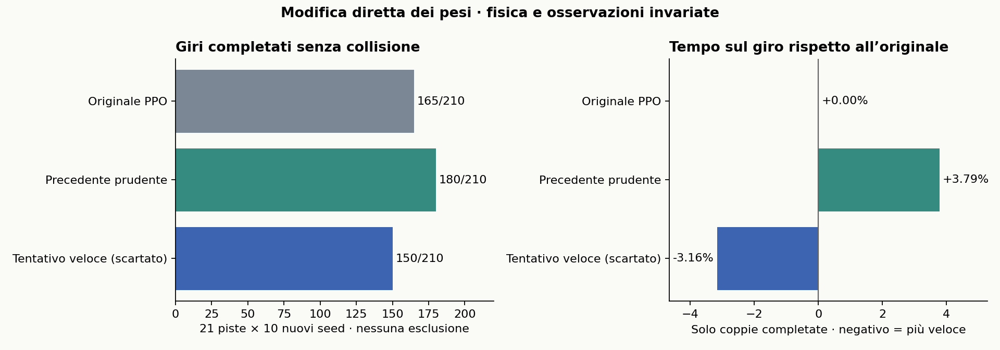

| Modello | Giri completati | Collisioni | Tempo appaiato rispetto all’originale |
|---|---|---|---|
| Originale PPO | 165/210 | 45 | riferimento |
| Precedente prudente | 180/210 | 30 | +3.79% |
| Tentativo veloce, scartato | 150/210 | 60 | -3.16% |

Compensare la curvatura
Il modello dinamico single-track permette di stimare come cambia il guadagno tra sterzo e velocità d’imbardata passando da 8,5 a 8,8 m/s. Il candidato moltiplica lo sterzo originale per 1,02721087931901 e aggiunge 0,3 m/s prima del clipping. Il calcolo richiede 66 scalari nella testa d’azione. La formula è stata controllata su 6.889 osservazioni e il caricamento PPO su 256 per checkpoint.
Sette ipotesi di sviluppo
| Programma nei pesi | Successi di sviluppo | Tempo su coppie completate |
|---|---|---|
clearance_speed |
0/21 | — |
two_gate |
9/21 | +0.11% |
two_gate_guard |
1/21 | +6.56% |
exit_guard |
7/21 | +0.86% |
geometric |
0/21 | — |
curvature_compensated |
10/21 | -3.09% |
straight_boost |
9/21 | -0.58% |
La PPO originale completa 10/21 partenze di sviluppo. Riscrivere la velocità o aggiungere una correzione laterale destabilizza la guida. Dopo il test del candidato congelato, l’ultimo tentativo aggiunge fino a 1,8 m/s nei rettilinei. Viene scartato sui dati di sviluppo. Su sette piste con tre seed per pista si svolge la selezione. Il confronto finale usa 21 piste, dieci nuovi seed da 20001 a 29010 e tre modelli, per 630 episodi finali e 798 complessivi.
Deriva e controsterzo
Per individuare possibili drift si richiedono almeno 0,5 secondi consecutivi con deriva assoluta ≥5°, velocità ≥3 m/s e sterzo opposto all’imbardata. Nessun giro completato del candidato soddisfa il criterio. Il massimo è 0,13 s. L’analisi a sette velocità fra 3 e 20 m/s trova equilibri con sterzo e imbardata dello stesso segno.
Le forze laterali sono lineari e il modello non rappresenta velocità angolari delle ruote o saturazione combinata degli pneumatici. Una singola scansione LiDAR può corrispondere a stati dinamici diversi. La telemetria serve solo alla diagnosi. A YasMarina, seed 2202, il 20,8% dei 510 punti campionati nell’impronta iniziale cade nel muro. Anche questa partenza è conteggiata.
Ogni episodio dura al massimo 200 secondi simulati. Per completare il giro occorre visitare almeno il 99% dei waypoint in ordine e attraversare la linea di partenza senza una collisione segnalata. Partenze e rumore LiDAR sono appaiati. I tempi si confrontano sulle stesse partenze completate dai modelli indicati. Un valore negativo indica un giro più rapido.
Completamenti e tempi per pista
| Pista | Originale | Prudente | Nuovo | Tempo nuovo/originale |
|---|---|---|---|---|
| Austin | 9/10 | 9/10 | 9/10 | -3.04% |
| BrandsHatch | 10/10 | 10/10 | 10/10 | -3.23% |
| Budapest | 2/10 | 9/10 | 2/10 | — |
| Catalunya | 10/10 | 10/10 | 10/10 | -3.12% |
| Hockenheim | 10/10 | 10/10 | 10/10 | -3.43% |
| IMS | 5/10 | 5/10 | 5/10 | -3.14% |
| Melbourne | 10/10 | 10/10 | 10/10 | -3.22% |
| MexicoCity | 10/10 | 10/10 | 10/10 | -3.14% |
| Monza | 6/10 | 6/10 | 2/10 | -2.87% |
| MoscowRaceway | 10/10 | 10/10 | 4/10 | -3.11% |
| Nuerburgring | 10/10 | 10/10 | 10/10 | -3.23% |
| Oschersleben | 0/10 | 4/10 | 0/10 | — |
| Sakhir | 10/10 | 10/10 | 10/10 | -3.13% |
| SaoPaulo | 10/10 | 10/10 | 10/10 | -3.09% |
| Sepang | 9/10 | 9/10 | 9/10 | -3.06% |
| Silverstone | 10/10 | 10/10 | 10/10 | -3.14% |
| Sochi | 0/10 | 0/10 | 0/10 | — |
| Spa | 6/10 | 10/10 | 4/10 | -3.22% |
| Spielberg | 10/10 | 10/10 | 10/10 | -3.25% |
| YasMarina | 8/10 | 8/10 | 5/10 | -3.08% |
| Zandvoort | 10/10 | 10/10 | 10/10 | -3.11% |